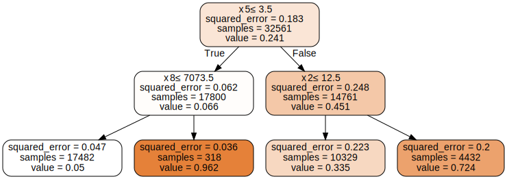

Example of loading a custom tree model into SHAP
This notebook shows how to pass a custom tree ensemble model into SHAP for explanation.
[1]:
import graphviz
import numpy as np
import scipy
import sklearn
import shap
Simple regression tree model
Here we define a simple regression tree and then load it into SHAP as a custom model.
[2]:
X, y = shap.datasets.adult()
orig_model = sklearn.tree.DecisionTreeRegressor(max_depth=2)
orig_model.fit(X, y)
[2]:
DecisionTreeRegressor(max_depth=2)In a Jupyter environment, please rerun this cell to show the HTML representation or trust the notebook.
On GitHub, the HTML representation is unable to render, please try loading this page with nbviewer.org.
DecisionTreeRegressor(max_depth=2)
[3]:
dot_data = sklearn.tree.export_graphviz(orig_model, out_file=None, filled=True, rounded=True, special_characters=True)
graph = graphviz.Source(dot_data)
graph
[3]:

For more information what these attributes mean exactly, see the scikit-learn documentation
[4]:
# extract the arrays that define the tree
children_left = orig_model.tree_.children_left
children_right = orig_model.tree_.children_right
children_default = children_right.copy() # because sklearn does not use missing values
features = orig_model.tree_.feature
thresholds = orig_model.tree_.threshold
values = orig_model.tree_.value.reshape(orig_model.tree_.value.shape[0], 1)
node_sample_weight = orig_model.tree_.weighted_n_node_samples
print(" children_left", children_left) # note that negative children values mean this is a leaf node
print(" children_right", children_right)
print(" children_default", children_default)
print(" features", features)
print(" thresholds", thresholds.round(3)) # -2 means the node is a leaf node
print(" values", values.round(3))
print("node_sample_weight", node_sample_weight)
children_left [ 1 2 -1 -1 5 -1 -1]
children_right [ 4 3 -1 -1 6 -1 -1]
children_default [ 4 3 -1 -1 6 -1 -1]
features [ 5 8 -2 -2 2 -2 -2]
thresholds [ 3.5000e+00 7.0735e+03 -2.0000e+00 -2.0000e+00 1.2500e+01 -2.0000e+00
-2.0000e+00]
values [[0.241]
[0.066]
[0.05 ]
[0.962]
[0.451]
[0.335]
[0.724]]
node_sample_weight [32561. 17800. 17482. 318. 14761. 10329. 4432.]
[5]:
# define a custom tree model
tree_dict = {
"children_left": children_left,
"children_right": children_right,
"children_default": children_default,
"features": features,
"thresholds": thresholds,
"values": values,
"node_sample_weight": node_sample_weight,
}
model = {"trees": [tree_dict]}
[6]:
explainer = shap.TreeExplainer(model)
[7]:
# Make sure that the ingested SHAP model (a TreeEnsemble object) makes the
# same predictions as the original model
assert np.abs(explainer.model.predict(X) - orig_model.predict(X)).max() < 1e-4
[8]:
# make sure the SHAP values sum up to the model output (this is the local accuracy property)
assert np.abs(explainer.expected_value + explainer.shap_values(X).sum(1) - orig_model.predict(X)).max() < 1e-4
Simple GBM classification model (with 2 trees)
Here we define a simple gradient-boosting classifier and then load it into SHAP as a custom model.
[9]:
X2, y2 = shap.datasets.adult()
orig_model2 = sklearn.ensemble.GradientBoostingClassifier(n_estimators=2)
orig_model2.fit(X2, y2)
[9]:
GradientBoostingClassifier(n_estimators=2)In a Jupyter environment, please rerun this cell to show the HTML representation or trust the notebook.
On GitHub, the HTML representation is unable to render, please try loading this page with nbviewer.org.
GradientBoostingClassifier(n_estimators=2)
Pull the info of the first tree
[10]:
tree_tmp = orig_model2.estimators_[0][0].tree_
# extract the arrays that define the tree
children_left1 = tree_tmp.children_left
children_right1 = tree_tmp.children_right
children_default1 = children_right1.copy() # because sklearn does not use missing values
features1 = tree_tmp.feature
thresholds1 = tree_tmp.threshold
values1 = tree_tmp.value.reshape(tree_tmp.value.shape[0], 1)
node_sample_weight1 = tree_tmp.weighted_n_node_samples
print(" children_left1", children_left1) # note that negative children values mean this is a leaf node
print(" children_right1", children_right1)
print(" children_default1", children_default1)
print(" features1", features1)
print(" thresholds1", thresholds1.round(3))
print(" values1", values1.round(3))
print("node_sample_weight1", node_sample_weight1)
children_left1 [ 1 2 3 -1 -1 6 -1 -1 9 10 -1 -1 13 -1 -1]
children_right1 [ 8 5 4 -1 -1 7 -1 -1 12 11 -1 -1 14 -1 -1]
children_default1 [ 8 5 4 -1 -1 7 -1 -1 12 11 -1 -1 14 -1 -1]
features1 [ 5 8 2 -2 -2 0 -2 -2 2 8 -2 -2 8 -2 -2]
thresholds1 [ 3.5000e+00 7.0735e+03 1.2500e+01 -2.0000e+00 -2.0000e+00 2.0500e+01
-2.0000e+00 -2.0000e+00 1.2500e+01 5.0955e+03 -2.0000e+00 -2.0000e+00
5.0955e+03 -2.0000e+00 -2.0000e+00]
values1 [[-0. ]
[-0.175]
[-0.191]
[-1.177]
[-0.503]
[ 0.721]
[-0.223]
[ 4.013]
[ 0.211]
[ 0.094]
[ 0.325]
[ 4.048]
[ 0.483]
[ 2.372]
[ 4.128]]
node_sample_weight1 [3.2561e+04 1.7800e+04 1.7482e+04 1.4036e+04 3.4460e+03 3.1800e+02
5.0000e+00 3.1300e+02 1.4761e+04 1.0329e+04 9.8070e+03 5.2200e+02
4.4320e+03 3.7540e+03 6.7800e+02]
Pull the info of the second tree
[11]:
tree_tmp = orig_model2.estimators_[1][0].tree_
# extract the arrays that define the tree
children_left2 = tree_tmp.children_left
children_right2 = tree_tmp.children_right
children_default2 = children_right2.copy() # because sklearn does not use missing values
features2 = tree_tmp.feature
thresholds2 = tree_tmp.threshold
values2 = tree_tmp.value.reshape(tree_tmp.value.shape[0], 1)
node_sample_weight2 = tree_tmp.weighted_n_node_samples
print(" children_left2", children_left2) # note that negative children values mean this is a leaf node
print(" children_right2", children_right2)
print(" children_default2", children_default2)
print(" features2", features2)
print(" thresholds2", thresholds2.round(3))
print(" values2", values2.round(3))
print("node_sample_weight2", node_sample_weight2)
children_left2 [ 1 2 3 -1 -1 6 -1 -1 9 10 -1 -1 13 -1 -1]
children_right2 [ 8 5 4 -1 -1 7 -1 -1 12 11 -1 -1 14 -1 -1]
children_default2 [ 8 5 4 -1 -1 7 -1 -1 12 11 -1 -1 14 -1 -1]
features2 [ 5 8 2 -2 -2 0 -2 -2 2 8 -2 -2 8 -2 -2]
thresholds2 [ 3.5000e+00 7.0735e+03 1.3500e+01 -2.0000e+00 -2.0000e+00 2.0500e+01
-2.0000e+00 -2.0000e+00 1.2500e+01 5.0955e+03 -2.0000e+00 -2.0000e+00
5.0955e+03 -2.0000e+00 -2.0000e+00]
values2 [[-1.000e-03]
[-1.580e-01]
[-1.720e-01]
[-1.062e+00]
[ 1.360e-01]
[ 6.420e-01]
[-2.030e-01]
[ 2.993e+00]
[ 1.880e-01]
[ 8.400e-02]
[ 2.870e-01]
[ 3.015e+00]
[ 4.310e-01]
[ 1.895e+00]
[ 3.066e+00]]
node_sample_weight2 [3.2561e+04 1.7800e+04 1.7482e+04 1.6560e+04 9.2200e+02 3.1800e+02
5.0000e+00 3.1300e+02 1.4761e+04 1.0329e+04 9.8070e+03 5.2200e+02
4.4320e+03 3.7540e+03 6.7800e+02]
Create a list of SHAP Trees
[12]:
# define a custom tree model
tree_dicts = [
{
"children_left": children_left1,
"children_right": children_right1,
"children_default": children_default1,
"features": features1,
"thresholds": thresholds1,
"values": values1 * orig_model2.learning_rate,
"node_sample_weight": node_sample_weight1,
},
{
"children_left": children_left2,
"children_right": children_right2,
"children_default": children_default2,
"features": features2,
"thresholds": thresholds2,
"values": values2 * orig_model2.learning_rate,
"node_sample_weight": node_sample_weight2,
},
]
model2 = {
"trees": tree_dicts,
"base_offset": scipy.special.logit(orig_model2.init_.class_prior_[1]),
"tree_output": "log_odds",
"objective": "binary_crossentropy",
"input_dtype": np.float32, # this is what type the model uses the input feature data
"internal_dtype": np.float64, # this is what type the model uses for values and thresholds
}
Explain the custom model
[13]:
# build a background dataset for us to use based on people near a 0.95 cutoff
vs = np.abs(orig_model2.predict_proba(X2)[:, 1] - 0.95)
inds = np.argsort(vs)
inds = inds[:200]
[14]:
# build an explainer that explains the probability output of the model
explainer2 = shap.TreeExplainer(
model2,
X2.iloc[inds, :],
feature_perturbation="interventional",
model_output="probability",
)
[15]:
# Make sure that the ingested SHAP model (a TreeEnsemble object) makes the
# same predictions as the original model
assert np.abs(explainer2.model.predict(X2, output="probability") - orig_model2.predict_proba(X2)[:, 1]).max() < 1e-4
[16]:
# make sure the sum of the SHAP values equals the model output
shap_sum = explainer2.expected_value + explainer2.shap_values(X2.iloc[:, :]).sum(1)
assert np.abs(shap_sum - orig_model2.predict_proba(X2)[:, 1]).max() < 1e-4